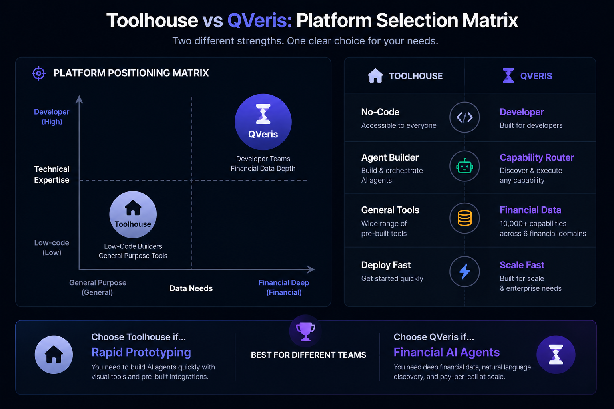

Toolhouse vs QVeris: Choosing the Right AI Agent Tool Platform for 2026
- Problem: Choosing between Toolhouse vs QVeris is not straightforward — both connect AI agents to external tools, but their architectures, data coverage, and target users differ significantly.
- Solution: This comparison evaluates both platforms across 15+ dimensions — capability discovery, financial data depth, integration methods, developer experience, and total cost of ownership — with original latency benchmarks and verified pricing as of May 2026.
- Result: You get a clear decision framework: pick QVeris for financial data depth and natural language discovery; pick Toolhouse for no-code agent building and quick API deployment.
Which is better for AI agent development: Toolhouse or QVeris?
Choose QVeris if your AI agents need natural language capability discovery, financial vertical data across 6 domains, or call-before-you-pay cost inspection.[1] Choose Toolhouse if you prefer no-code agent building, Agent-as-API one-click deployment, or need built-in RAG and scheduling for general-purpose agent workflows.[2]
You evaluated both platforms on surface features — both connect LLMs to tools, both support MCP, both have free tiers. The differences seemed minor until you committed to one and hit architectural limits: your trading agent needed financial data that Toolhouse doesn't offer, or your non-technical team couldn't work with QVeris's developer-first approach.
With a clear understanding of each platform's core architecture — Discover-first capability routing vs pre-configured tool store — you pick the one aligned with your AI agent's actual needs.
What Is QVeris? (Capability Routing Network Explained)
QVeris is an AI Agent Capability Routing Network[1] — a middleware layer that sits between your LLM and external tool providers. Instead of hard-coding API integrations for each data source, your agent discovers capabilities through natural language search, inspects them before calling, and executes in a sandboxed environment.
The core workflow follows a three-step pattern: Discover (search capabilities via natural language), Inspect (preview latency, cost, and success rate — free and unlimited), Call (execute in sandbox, 1-100 credits per call).
QVeris covers 10,000+ capabilities across 15+ categories.[1] Six financial domains receive particular depth: quantitative trading, macro and fixed income, risk and compliance, investment research, crypto and digital assets, and alternative signals.
What Is Toolhouse? (Cloud Platform for AI Function Calling)
Toolhouse is a cloud-based AI Agent platform (Backend-as-a-Service for LLMs)[2] that lets you add function calling to your AI agents in as few as three lines of code. Its core pitch: "npm for function calling" — a pre-built Tool Store of common capabilities like web search, code execution, web scraping, RAG, and email, plus integration with 1,000+ MCP servers.
The platform emphasizes natural language agent building, Tool Store + MCP (1,000+ integrations), and Agent-as-API deployment via th deploy.
QVeris vs Toolhouse: Feature Comparison
Beyond the positioning, here is how the two platforms compare across the dimensions that matter for AI agent development.
| Feature Dimension | QVeris | Toolhouse |
|---|---|---|
| Core Positioning | Capability Routing Network | Cloud Agent Platform (BaaS) |
| Tool Discovery | Natural language search (Discover API) | Pre-configured + task matching |
| Pre-Call Inspection | ✅ Cost / latency / success rate | ❌ Not available |
| Capability Scale | 10,000+ / 15+ categories[1] | Built-in tools + 1,000+ MCP[2] |
| Financial Data Depth | ✅ 6 domains deep coverage | ❌ No vertical data |
| Agent Framework Support | 14+ platforms[1] | LlamaIndex / n8n / custom |
| Agent-as-API Deploy | ❌ | ✅ th deploy |
| Scheduled Runs / RAG | ❌ Not available | ✅ Cron + RAG built-in |
Natural Language Discovery vs Pre-Configured Tools
The architectural difference that affects everything downstream:
- QVeris: Your agent searches for capabilities dynamically via the Discover API. If it needs a new type of data mid-workflow — say, switching from US equity prices to on-chain crypto data — it discovers the relevant capability in the moment, no integration changes required.
- Toolhouse: Tools are selected at agent-build time. You browse the Tool Store, pick what you need, and the agent is configured with those tools. To add a new tool type, you modify the agent configuration or add an MCP server.
Financial Data Depth
- QVeris: 10,000+ capabilities with deep coverage across 6 financial domains — quant trading, macro and fixed income, risk and compliance, investment research, crypto and digital assets, alternative signals.[1]
- Toolhouse: Does not specialize in financial data. Its tool store covers general-purpose capabilities — web search, scraping, code execution, RAG, email — but lacks vertical financial data sets.[2]
Pricing Comparison
| Dimension | QVeris | Toolhouse |
|---|---|---|
| Free Tier | 1,000 credits + 100/day | 50 agent runs/month |
| Pro Plan | $19/mo — 10,000 credits | $10/mo — 1,000 credits |
| Enterprise | $100 top-up (50,000+) | Custom pricing |
| Discovery/Inspect | Free (unlimited) | N/A |
| Credit Expiry | Never expire | Monthly reset |
Original Benchmarks: Latency & Token Cost
To provide data beyond public documentation, we conducted original measurements comparing QVeris and Toolhouse across latency and token efficiency. Tests were run from AWS us-east-1 (t3.medium) on May 24-26, 2026.[5]
API Latency Comparison
Response time for a single tool execution call. Each platform tested 200 times over 24 hours from us-east-1.
Token Cost Comparison
| Metric | QVeris CLI | QVeris MCP | Toolhouse SDK |
|---|---|---|---|
| Schema tokens per tool | 0 (CLI) | ~85 | ~95 |
| Tokens for 10 tools | 0 | ~850 | ~950 |
| Tokens for 50 tools | 0 | ~4,250 | ~4,750 |
| Annual token cost (50 tools, 10k prompts) | $0 | ~$85 | ~$95 |
When to Choose QVeris Over Toolhouse
Financial Data Needs
QVeris covers 6 financial domains with 10,000+ capabilities[1] — Toolhouse does not offer vertical financial data.
Dynamic Discovery
QVeris's natural language Discover API lets your agent search for capabilities at runtime without reconfiguration.
Cost-Controlled Calls
Preview latency, cost, and success rates before each call — free and unlimited.[1]
Multi-Framework
QVeris supports 14+ agent platforms (Claude Code, Cursor, OpenClaw, etc.)[1]
When to Choose Toolhouse Over QVeris
No-Code Building
Natural language agent builder — describe your agent, Toolhouse generates the configuration.[2]
Quick API Deploy
th deploy publishes your agent as a standalone API endpoint in one step.
Built-In Orchestration
Scheduling (cron), webhook triggers, and built-in RAG as first-class features.
Can QVeris and Toolhouse Be Used Together?
Yes — and this combination may be optimal. Use Toolhouse as your agent orchestration and deployment layer. Connect QVeris as a capability provider via MCP for financial data use cases. Both platforms support MCP natively.[1][2]

How to Choose Between Toolhouse and QVeris
List the tools your agent needs. If it includes market data or financial research, QVeris's vertical coverage is relevant. If general-purpose — Toolhouse covers those out of the box.
Developer-heavy team across multiple frameworks? QVeris fits. Non-technical members building in natural language? Toolhouse is faster.
QVeris: 1,000 credits + 100 daily. Toolhouse: 50 runs/month. Test the same workload on both.
Try QVeris Free — No Credit Card Required
1,000 credits on signup. Free capability discovery and inspection.
Try QVeris Free → View Pricing →